05_OpenDRIVE Lanes - road networks for simulation_原文
2026年05月15日 14:26
Welcome to my video about lanes in open drives. My name is Nico and in this video I will explain how lanes work in open drives. I won't be able to cover everything you need to know about lanes, but we will get the basics covered. So in this video you will learn what is needed to the defined lanes in open drive. And we will also have a look at the different attributes you can defin 4 lanes. So let's start defining some lanes.
This is the high level XML structure of Open Drive. You can check out my video, what is open drive, where we explaining what each of the elements in the structure is for when once we want to define lanes?
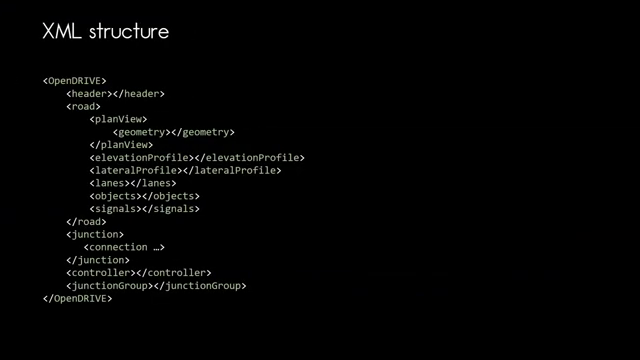
First of all, we need a road and the row definition is directly under the header with the reference line in the plan view. So within the road, we can also find the lane definitions for that particular road. Let us see what we can do here and what are the important concepts for lanes. Let us specify a simple road with right hand traffic, a length of 100 m, and we will give that road the ID 1 and stating that this road is not part of a junction. So as you can see, this road has two lanes. And obviously these lanes are defined within the lanes element. So let us see how can we define those two elements within open drive.
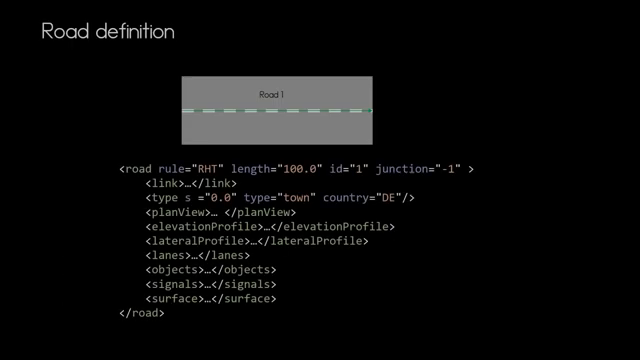
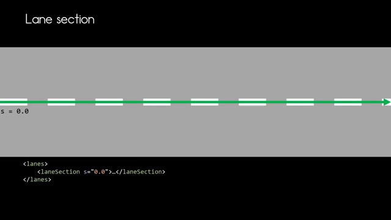
First, we specify the lane section. The lane section splits the road vertically into segments. So wherever you want to add a lane or remove a lane in your row definition, you add a lane section. Here you can see how the new lane section, a third lane starts. The lane section is defined for specific as coordinate here, the first section starts at s equals 0 and is valid until the next lane section starts at s equals 15. And in the second lane section, the third lane is added and you can see how it is starting as we now know where the lane section is, let's jump into the lane section and see what we can define within that lane section.
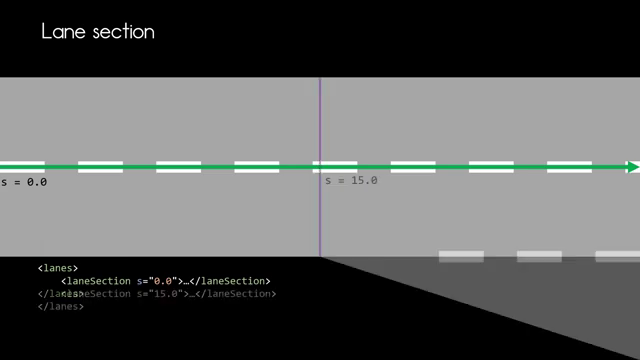
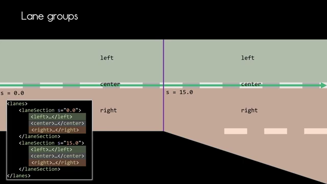
Each lane section has three groups left, center, and right, and this is true for every lane section. The center group is mandatory and needs to be defined for every lane section. If you don't need either left or right, you may skip them. The groups are defined according to the direction of the reference line. This means left or right according to the direction of that reference line. So in our case, left on the top, right on the bottom, in the second lane section, we now have two lanes in the right group. So now we can step 1 level deeper and see how the lanes our defined.
Let's start with the first line section starting at s equals 0. Every line has an ID in the left group, the ID are positive and the right group the Id's are negative. The lane in the center group will always have the ID 0 and there is always only that single lane. So how would that look like in the XML code?
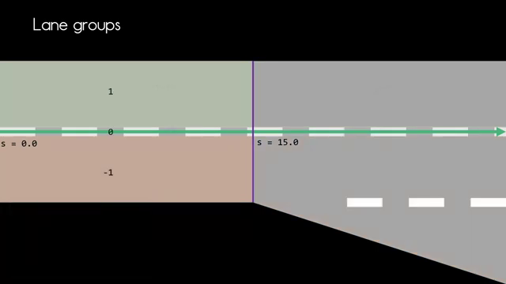
Here we now can see the lane definitions in the first lane section, and what we see is that every lane has a link entry and a width entry except the center lane. This will never have a width entry. So in the left group, the lane with ID one is of type driving, and we can see that the level attribute is set to false, meaning that this lane is not excluded from any applied super elevation, and we see that we have a width with some attributes in there, which we will have a look in a bit, as well as for the link element. And same goes for lane with ID -1.
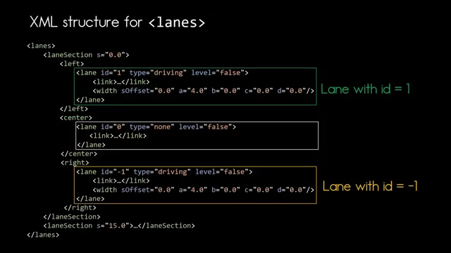
Here again, we have of type driving and the level attribute is again set to false for the second lane section starting at S coordinate 15, we now have an additional lane with the ID -2, and we again have the lanes with the Ids 1, 0, and -1. But how does that shape of the lane -2 looks like in the XML code? So now let's have a look at the XML code for that second lane section. There is no change in the XML code for lane with ID 1 and lane with ID -1. But we see that now lane with ID 2 has two width entries. Let's see how we need to interpret these two with entries before we jump to lane with the ID -2, let's look at a very simple example, and that's the width of lane with ID 1. And here we see that the width is always represented by a third or polymer, and the parameters for that polymer are represented in the XM. So we see the s offset, we have ABC, and d, and the s offset is stating where does that lane?
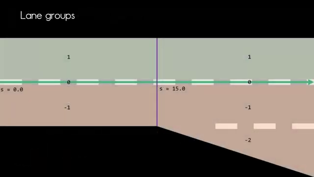
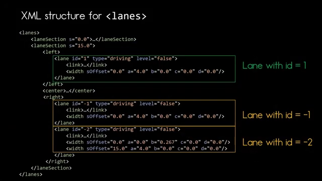
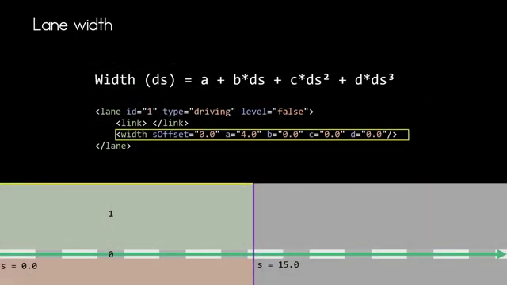
Lane starts according to the beginning of the lane section. So in our case, obviously the width definition start at the very beginning of the length section. So it s equals 0 with no offset whatsoever. And we are setting 8 to 4 m, which means that the starting point of the width is at 4 m.
And as the parameters BC, and d are set to 0, this means we have a constant width for that lane. For lane with ID 2, this looks a bit different. Now here, we now have two width entries. The S offset is set before states with with calculation starts in relation to the lane section. So this is why this is set to 0.
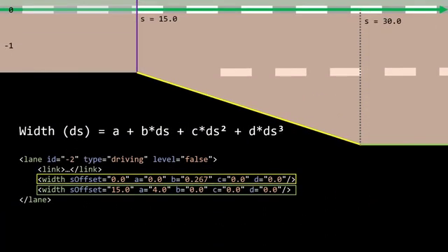
At the beginning of the lane section, the width of the lane with ID 2 is 0. And winds along the reference line. In my very simple example, the width change is linear. This is why I only need to calculate the value for the attribute b and the attributes AC, and d can be set to 0. Once the required width is reached, a new width entry can be added and is then valid from that point on. And in my case, I want a constant width of 4 m again as we had before. And this is why I set the value a to four, and BC and d are set to 0.
The S offset. Now with that second width, entry is set to 15 m because the change of width has a duration of 15 m starting from that second lane section. So if we have a look from the beginning of the road, that will be 50 m for the first line section. Then then the S offset of another 50 m. So that would be S equals 30 m.
What I did not talk about is the link element. So let's have a look at that. Now. In the link element, the predecessor or the successor of each lane can be defined If the line has no successor or predecessor, you don't need to define it. If we look at lane with ID one in the first lane section marked yellow here, or this lane has a success-story, no predecessor, and the successor of that lane is the lane with ID one in the next lane section for the lane with ID 1 and the second lane section, we now see that the link element contains only a predecessor element stating that the lane with ID one in the previous lane section is the predecessor of this lane. And if we remember, the success of that lane was the lane, we are looking now at, and now we've covered the very basic concepts you need to define lanes in open drive.
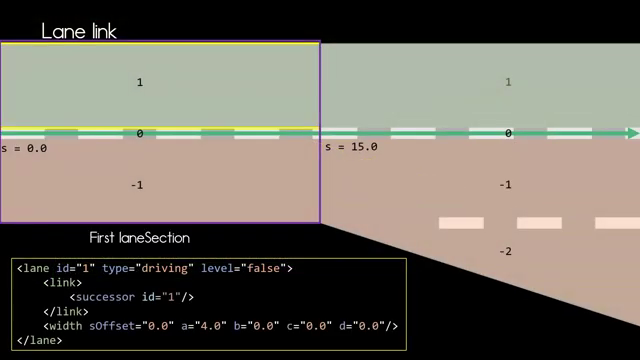
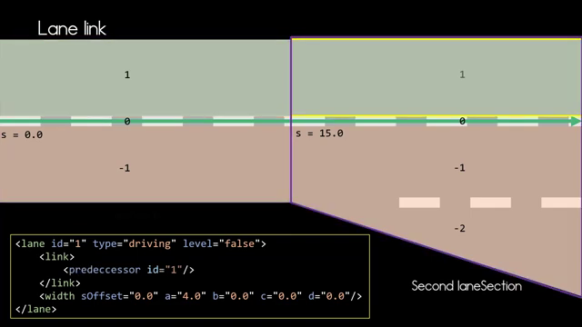
Thank you very much for watching. Now you have a basic understanding how LS and opendrive there are definitely a few more topics you can discover for lanes, and I can only recommend that you dive into the standard document for more details. And I think the knowledge you gained in this video will help you understanding how that works. If you like this video, consider to like and subscribe, and I hope to see you the next.